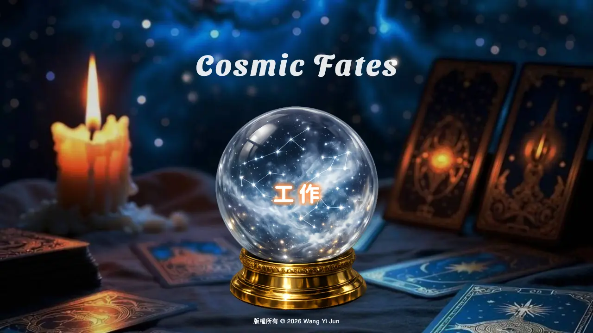
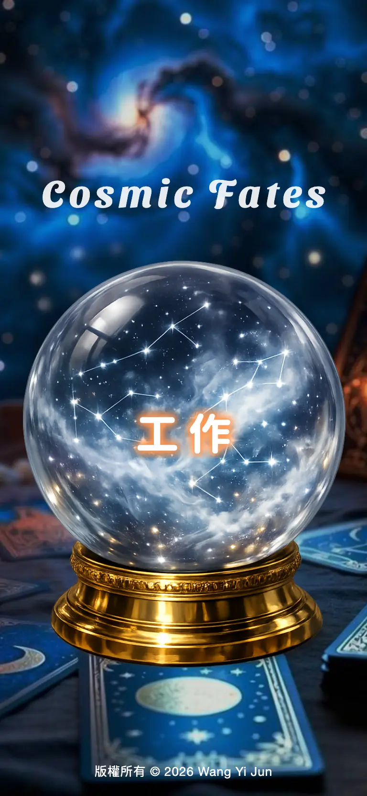
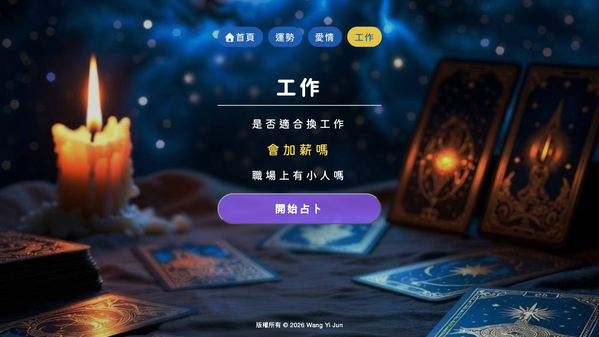
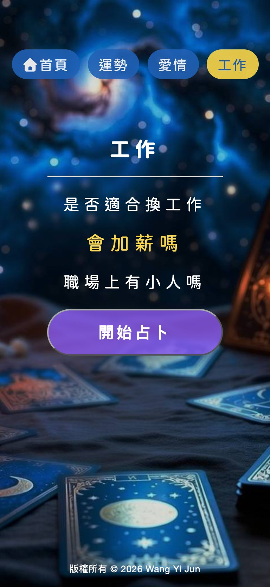
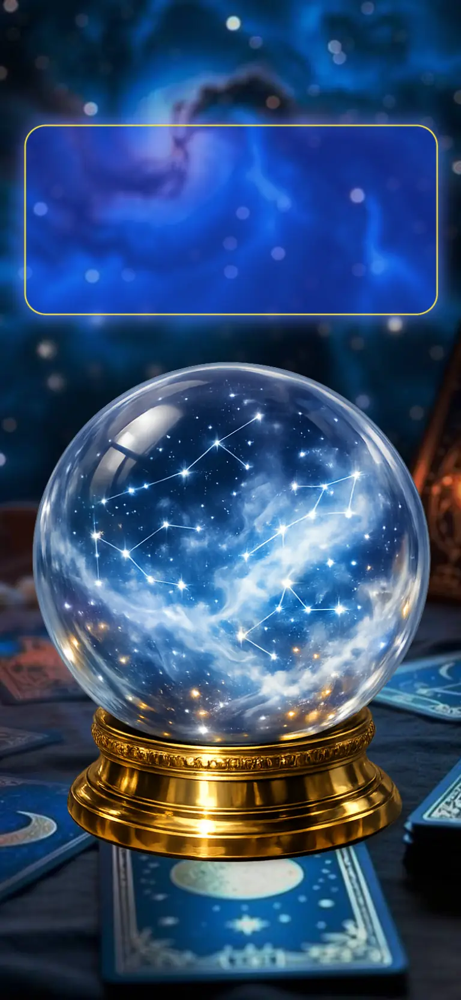
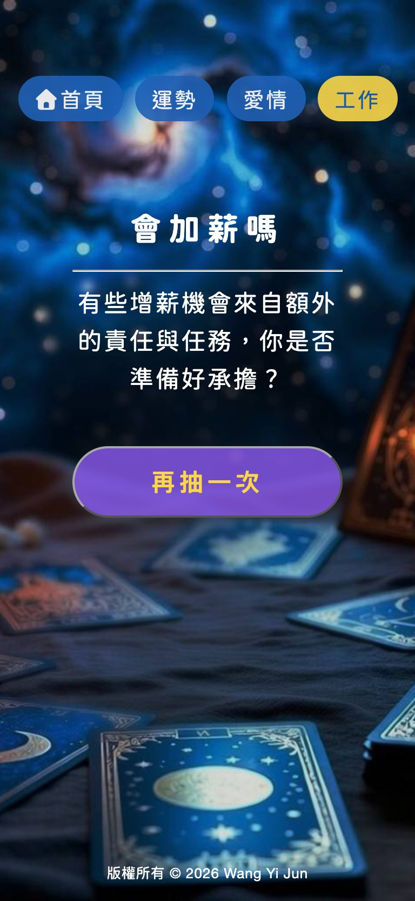

COSMIC FATES
個人前端實踐專案「COSMIC FATES」，打造沉浸式塔羅牌互動體驗。
獨立包辦視覺風格、UI 介面到 HTML/CSS/JavaScript 原生程式碼建構，並善用 AI 工具協同輔助開發，將前端互動邏輯與設計美感高效整合。
COMPANY
DESIGN YEAR
2026
ROLE
Front-end
UI/UX
Visual Designer
UI/UX
Visual Designer
Skill Tools
Figma
Photoshop
VSCode
Photoshop
VSCode
01
Overview
專案概述
Challenge
挑戰
不依賴框架，以原生 HTML／CSS／JavaScript 打造沉浸式占卜體驗，需同時兼顧神祕氛圍的視覺、互動動畫，以及從手機到桌機的 RWD 版面。
Goal
目標
讓使用者以「選擇主題 → 選擇問題 → 抽取解答」三個步驟完成占卜，並透過水晶球輪播與載入動畫營造占卜的儀式感。
My Role
負責項目
視覺風格、UI 介面設計、HTML／CSS／JavaScript 原生開發與 RWD 調整，並善用 AI 工具協同輔助開發。
- 01概念發想
- 02視覺風格
- 03UI 設計
- 04前端開發
- 05互動動畫
- 06RWD・上線
02
Key Screens
主要頁面01 首頁 ｜ HOME — 水晶球結合自動輪播選單，引導使用者選擇占卜主題。


02 內頁 ｜ 主題導覽列，點選題目即高亮並可開始占卜。


03 載入動畫 ｜ LOADING — 引導文字逐行淡入，水晶球以 CSS hue-rotate 循環變色，營造占卜儀式感。

04 結果頁 ｜ RESULT — 隨機抽出對應解答，並可一鍵「再抽一次」。
